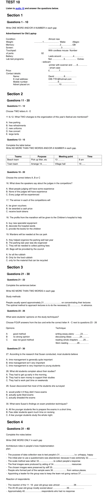

IELTS Listening: Test 10
Listening and questions
Section 1Questions 1–10
Questions 1–10
Write ONE WORD AND/OR A NUMBER in each gap
Advertisement for Old Laptop
Condition: Almost new
Weight: 1 Make: Allegro
Memory: 2 GB
Screen: 3
Touchpad: With cordless mouse Number of ports: 02
Battery: Lasts around 4
Lab test programs: Not 5 Extras:
webcam
-printer with scanner and 6
smart case
Price: £ 7
Contact details:
Name: David 8
E-mail address: DIB-7791@hotmail.com
Mobile number: 9
Advert placed on: 10
Section 2Questions 11–20
Questions 11–12
Choose TWO letters A - E
11 & 12 What TWO changes to the organization of this year’s festival are mentioned?
Questions 13–15
Complete the table below:
Write NO MORE THAN TWO WORDS AND/OR A NUMBER in each gap.
| Teams | Purpose | Meeting point | Time |
|---|---|---|---|
| Beach team | Pick up litter, etc | 13 | 8 am |
| Town team | Arrange 14 | Village hall | 15 |
Questions 16–20
Choose the correct letters A, B or C
16 What does the speakers say about the judges in the competitors?
17 The winner in each of the competitions will
18 The profits from the marathon will be given to the Children’s hospital to help
19 Wardens will be needed at the car park
20 Bags will be provided by the council
Section 3Questions 21–30
Questions 21–22
Complete the sentences below:
Write NO MORE THAN TWO WORDS in each gap
Study methods
People usually spend approximately 21 on concentrating their lectures
The optimal method to approach lectures is to do the necessary 22 in advance.
Questions 23–26
What were students’ opinions on the study techniques?
Choose FOUR answers from the box and write the correct letter A - C next to questions 23 - 26
Opinions Technique
A good method writing essay plans: 23
B no strong opinion discussing ideas: 24
C was not good method reading whole chapters 25
Skim reading 26
Questions 27–30
27 According to the research that Susan conducted, most students believe
28 What did students complain about their studies?
29 Susan discovered that most of the students she surveyed
30 What were Susan’s findings on exam prediction techniques?
Section 4Questions 31–40
Questions 31–40
Complete the notes below:
Write ONE WORD ONLY in each gap
Architecture roles in people’s lives
Implementation plan:
The purpose of data collection was to test people’s 31 , i.e. unhappy, happy
The initial plan to use a questionnaire was abandoned, because it was extremely 32
The scale method was rather 33 to collect people’s response
The final images were produced by aiding of 34 resources
The chosen images were preserved by stiff 35
People who formed part of the sample were 36 from various places.
Appointing a leader for the group was to keep the team not going various 37
Reaction of respondents:
The reaction of the 11- 18- year-old group was utmost 38
The 20-40-year-old group mostly scored about 39
Approximately 40 respondents who had no response
Show the original book pages (picture)

Tap or click the pages to open them full size in a new tab.
Check your answers
Marking ignores capital letters and accepts plurals and the usual alternative answers. If your answer is right but not accepted, press My answer is also right under it.
Tapescript
Check your answers first, then the tapescript opens here.